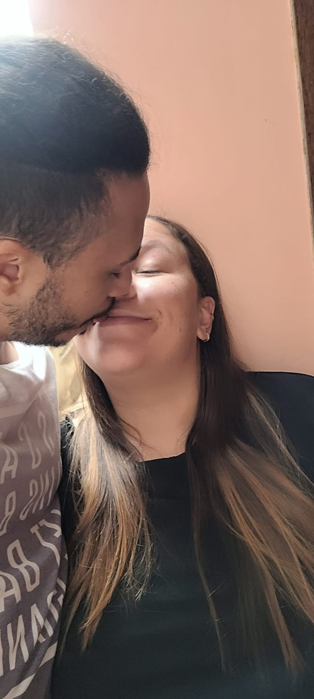
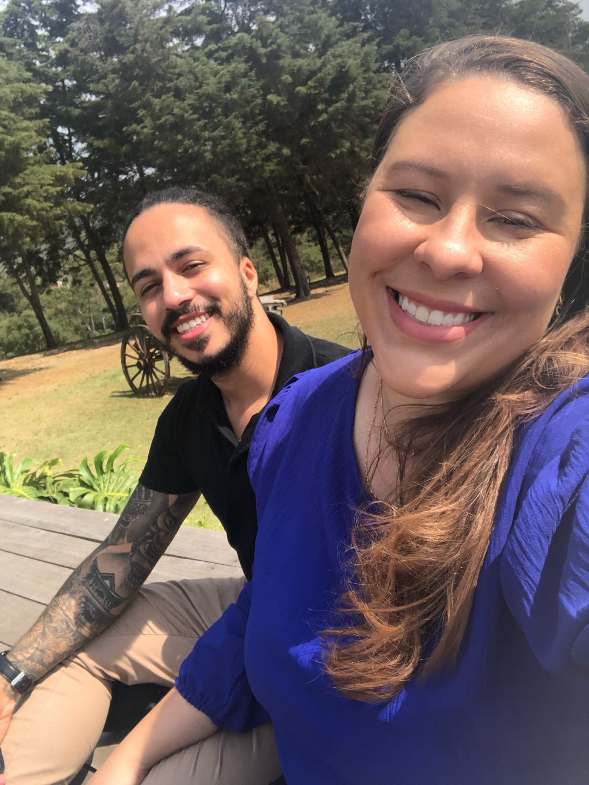
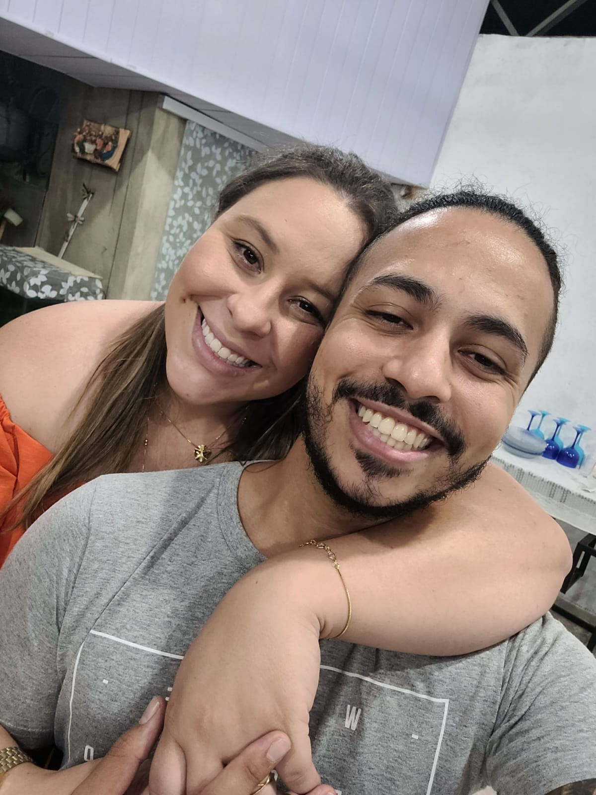
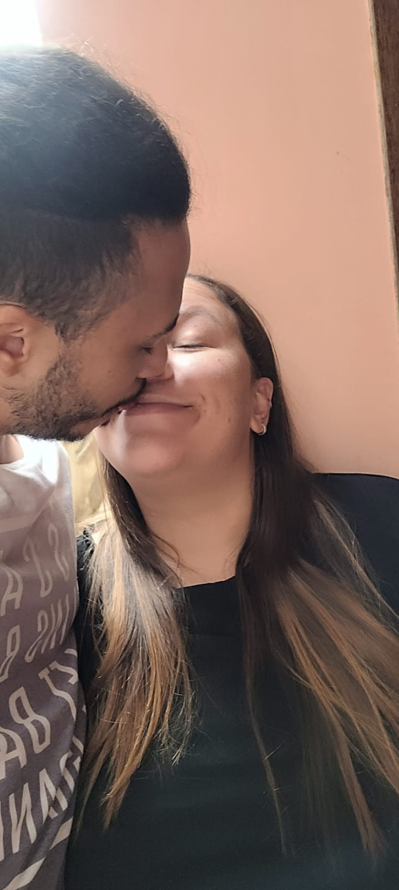
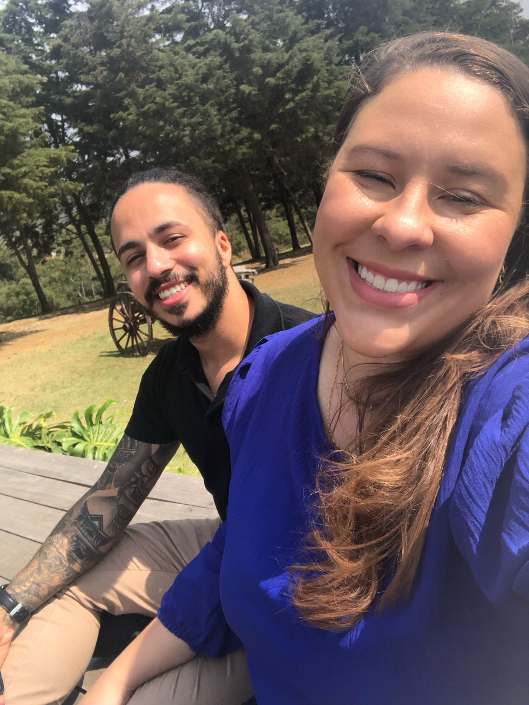
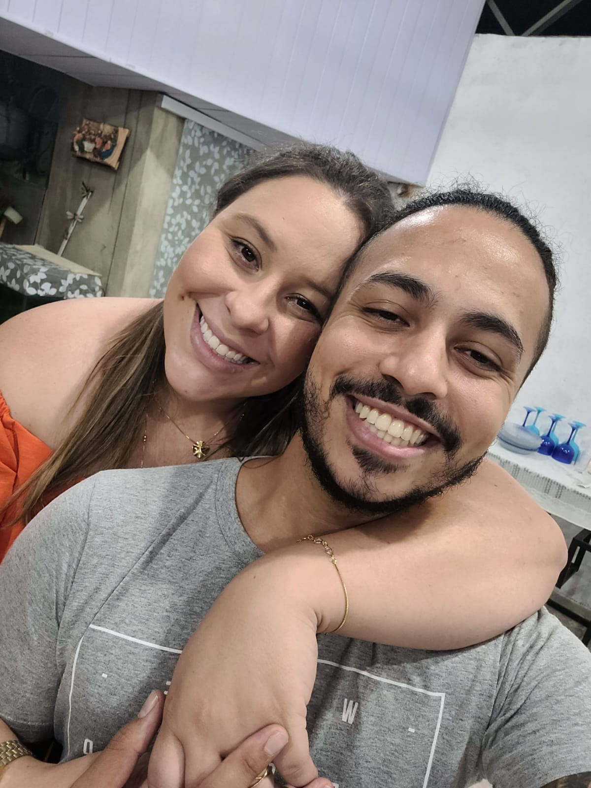

Este ano começou com mais dias de luta do que de glória, não é? Mas, por um lado, isso não é ruim. Vejo a gente evoluindo e amadurecendo como um casal ao superarmos juntos esses momentos difíceis.
Eu amo o nosso jeito de ser, cada detalhe que vivemos, cada momento "besta", desde assistir a uma série no sofá até cantar "uuuhuuuu uuuu uuu" com seu dó maior no shopping.
Amo o jeito que estamos evoluindo juntos e a ideia que temos de um futuro (RICOS!). Eu amo como a gente incentiva um ao outro, até começamos a academia juntos hihihi, eu amo nosso companherimos.
Mesmo com gostos diferentes (você, conhecedora de todas as músicas, e eu, de todos os games) e tempos de execução diferentes, a gente se encontra e se entende.
Sempre que rezo, peço para Deus abençoar nós dois juntinhos, para podermos crescer e conquistar nossos sonhos juntos!
Obrigado por você ser a namorada mais perfeita que alguém poderia ter, obrigado por tolerar minhas lerdisses, obrigado por me deixar ser seu anjinho.
Eu te AMO


 




